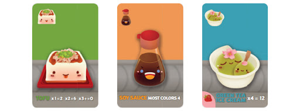

What are the rules for Catan?
The objective of The Settlers of Catan is to be the first one who collects 10 victory points. Each settlement is worth one victory point and each city is worth
two victory points. You can also earn victory points by holding the "Longest Road" card, the "Largest Army" card, or special victory point development
cards.
Read more

What are the rules for Fury of Dracula?
Fury of Dracula is a whopper of a game. It's immersive and tense. It’s impossible for us to explain all the rules, here. Many of them are circumstantial.
(If this happens, do this.) Instead, we’re going to give you a general gist of how to get started.
There are win conditions for both the team of Hunters and for Dracula. The Hunters win if they can find Dracula,
and then dish out 15 points of damage to him. Meanwhile, Dracula wins if they can advance the Influence Track up to 13.
So, how do the players accomplish these tasks?.
Read more

What are the rules for Sushi Go Party
Turns in Sushi Go Party! happen simultaneously. Each player chooses 1 card in their hand that
they would like to keep and places it face-down in front of them. When all players have done this, everyone reveals their chosen cards by turning them face-up.
After revealing cards, pass your remaining hand face-down to the player on your left. (In this way, each hand will move clockwise around the table).
Pick up this new hand and the next turn begins. (You will have a smaller hand to choose from)..
Read more
